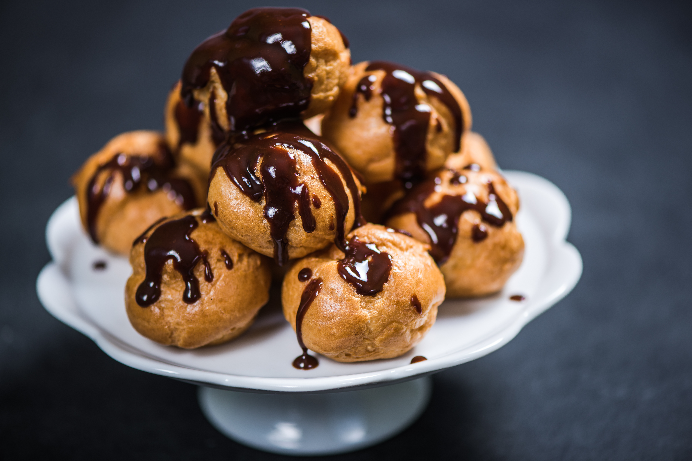

Profiteroles

Profiteroles with Chocolate Sauce
This delicious dessert will keep you coming back for more. A perfect treat in the summer after a light meal.
Ingredients
- 70ml full-fat mill
- 1/2 tsp caster sugar
- 1/2 tsp salt
- 70g unsalted butter, diced
- 70g plain flour
- 2 eggs
- 175ml double cream
- 1 tbsp honey or golden syrup
- 75g dark chocolate, finely chopped
Steps
- To make choux pastry place 70ml water, sugar, salt and butter into a pan and cook until butter has melted.
- Remove from the heat and quickly add the flour beating constantly with a wooden spoon until the dough is smooth.
- Place the pan back on the heat and cook, continuing to stir, for another 2 minutes until the dough forms a skin.
- Tip into a bowl and beat with a wooden spoon for a few minutes to allow the dough to cool (so the eggs don't scramble).
- Once slightly cooled, add in the first egg and beat until fully mixed in.
- Add and beat in enough of the second egg to give the correct consistency for piping.
- Preheat oven to 170C and line baking tray with baking paper.
- Pipe the profiteroles.
- Bake for about 25 minutes.
- Remove from oven and cut open with scissors to release the steam.
- Place cream and honey into a pan and bring to a simmer. Place into a jug and add the chopped chocolate and set aside to melt. Stir together to give a shiny sauce
- Fill each profiterole with icecream and pile up. Pour over the chocolate sauce to finish.
Home